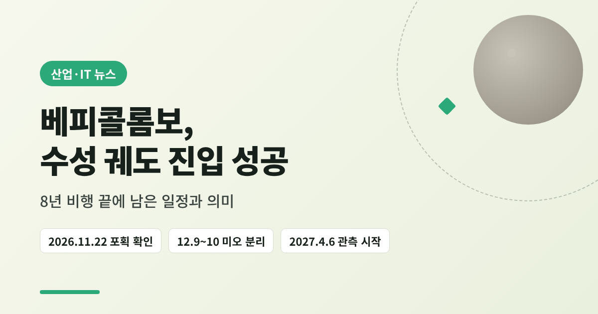
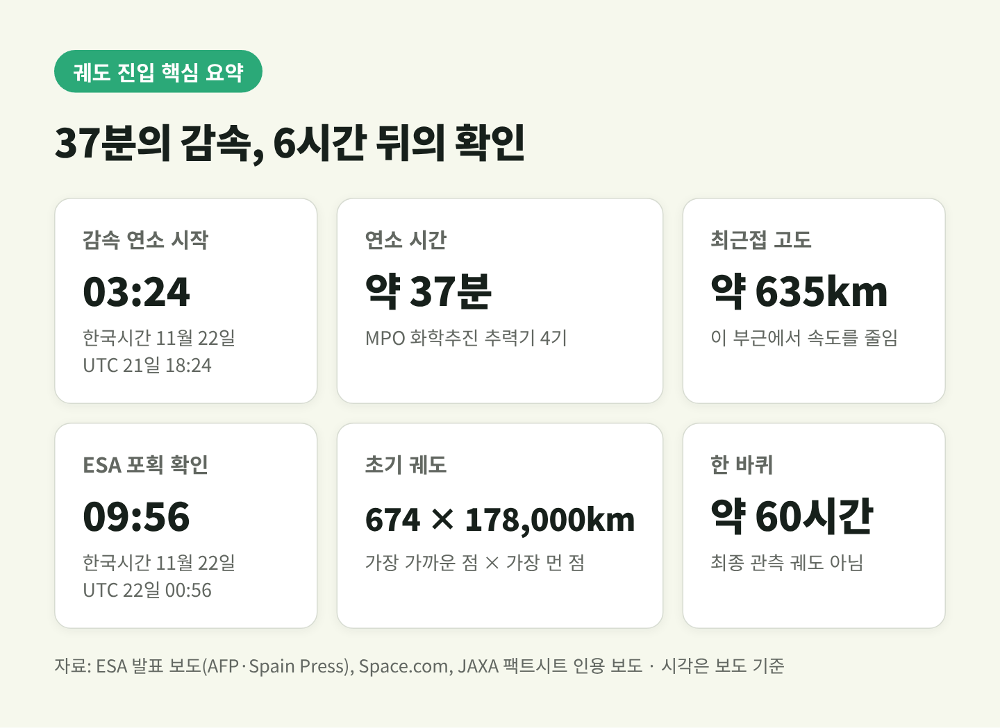
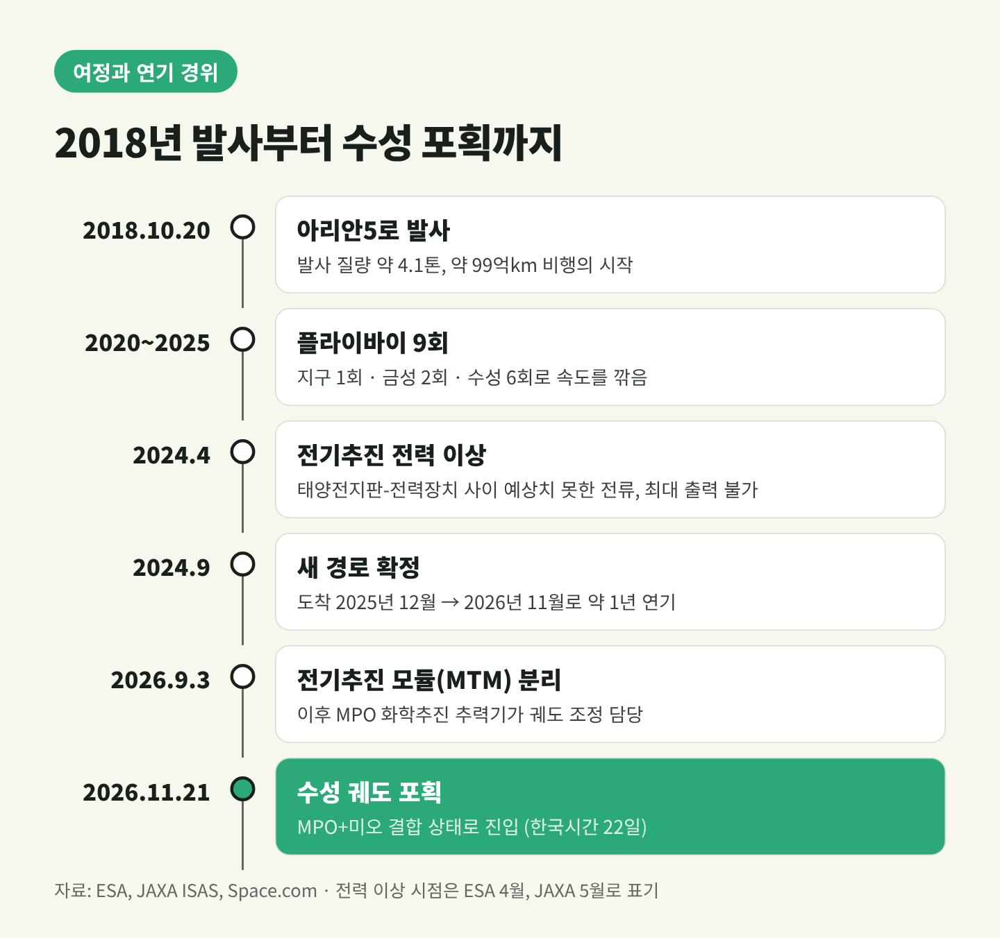
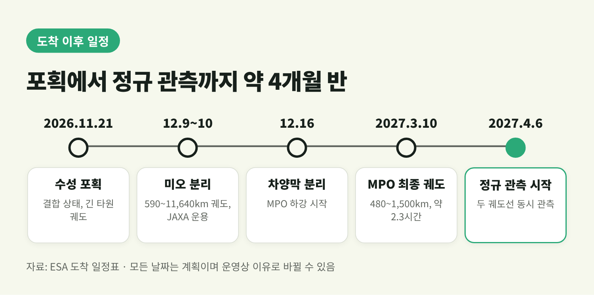
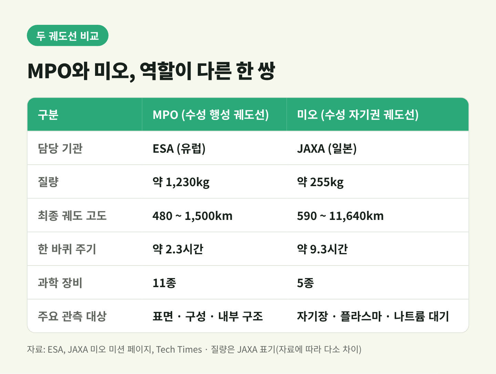
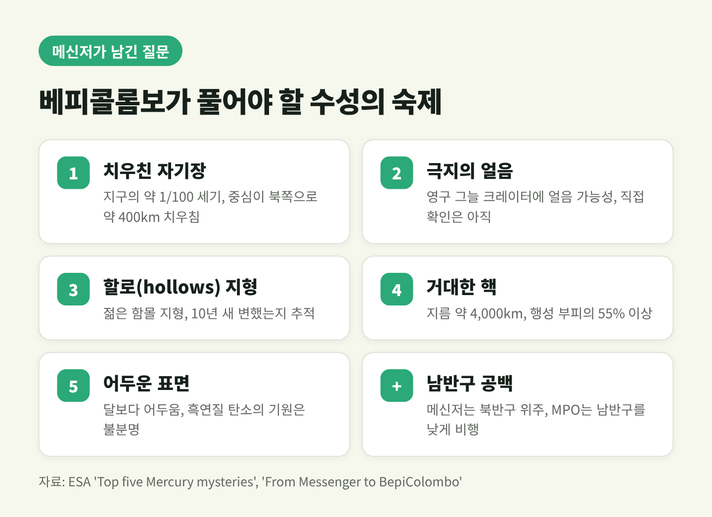

베피콜롬보 수성 궤도 진입 성공, 8년 비행 끝에 남은 일정과 의미

유럽과 일본이 함께 만든 수성 탐사선 베피콜롬보가 수성 궤도에 들어섰습니다. 이번 글에서는 진입이 어떻게 이뤄졌는지, 지금 궤도가 어떤 상태인지, 그리고 내년 4월 본격 관측까지 무엇이 남았는지를 정리해 보겠습니다. 지난 6월 이 블로그에서 임무 자체를 소개했으니, 오늘은 '도착'이라는 사건과 그 이후에 집중합니다.
세 줄 요약 - 한국시간 11월 22일 새벽 3시 24분부터 약 37분간 감속 연소를 했고, 같은 날 오전 9시 56분쯤 유럽우주국(ESA)이 포획 성공을 확인했습니다. - 지금은 최종 관측 궤도가 아니라 가장 먼 곳이 17만 8,000km에 이르는 긴 타원 궤도입니다. 12월 9~10일 일본 궤도선 '미오(Mio)'가 분리됩니다. - 정규 과학관측은 2027년 4월 6일 시작이 목표입니다. 메신저 이후 10여 년 만에 수성 궤도에서 다시 관측이 이뤄집니다.
■ 무슨 일이 있었나 — 37분의 감속, 6시간의 기다림
감속 연소는 협정세계시(UTC) 11월 21일 18시 24분에 시작됐습니다. 한국시간으로는 22일 새벽 3시 24분입니다.
ESA의 수성 행성 궤도선(MPO)이 화학추진 추력기 4기를 약 37분간 분사했습니다. 수성에 가장 가까이 다가간 고도 약 635km 부근에서 속도를 줄인 것입니다.
연소가 끝난 뒤에는 기다림이 이어졌습니다. ESA는 호주 뉴노시아 안테나로 신호를 기다렸고, 예정 종료 약 6시간 뒤인 22일 00시 56분(UTC)에 공식 계정으로 포획을 알렸습니다. 한국시간으로는 22일 오전 9시 56분쯤입니다.
AFP에 따르면 ESA는 이날 탐사선이 "궤도 포획에 성공했다"고 밝혔습니다. 독일 다름슈타트의 비행역학팀이 추적 데이터로 포획을 확인했다고 합니다.
방식도 눈여겨볼 만합니다. 2011년 NASA의 메신저는 초속 약 0.9km를 한 번에 줄이는 15분가량의 대형 연소로 궤도에 들어갔습니다. 베피콜롬보는 ESA가 '약안정경계 포획'이라 부르는 방법을 썼습니다. 태양과 수성의 중력이 엇갈리는 지점을 활용해, 비교적 작은 연소로 수성 중력에 붙잡히는 방식입니다.

다만 한 가지는 짚어둘 필요가 있습니다. 지금 궤도는 관측용 궤도가 아닙니다.
JAXA 팩트시트를 인용한 보도와 위키백과에 따르면 초기 궤도는 수성에서 가장 가까운 점이 674km, 가장 먼 점이 17만 8,000km인 길쭉한 타원입니다. 한 바퀴에 약 60시간이 걸립니다. 여기서부터 궤도를 조금씩 낮추고 다듬는 작업이 반년 가까이 이어집니다. Space.com은 이 과정을 16차례 기동으로 전했지만, ESA가 기동 횟수를 공식 발표하지는 않았습니다.
'도착'은 했지만 '자리 잡기'는 이제 시작인 셈입니다.
■ 왜 중요한가 — 명왕성보다 어려운 목적지
수성은 거리만 보면 먼 행성이 아닌데도 가장 까다로운 목적지 가운데 하나로 꼽힙니다. 이유는 거리보다 태양 중력에 있습니다.
태양 쪽으로 내려갈수록 탐사선은 빨라집니다. 수성의 공전 속도는 초속 약 47km로 지구(약 30km)보다 훨씬 빠릅니다. 그런데 수성 자체의 중력은 약해서, 붙잡히려면 그만큼 많은 속도를 버려야 합니다.
ESA는 수성의 안정 궤도에 들어가는 데 명왕성행보다 많은 에너지가 들 수 있다고 설명합니다. MIXS 장비 책임자인 레스터대 엠마 번스 교수도 "수성에 가는 것이 외행성계에 가는 것보다 더 많은 에너지가 든다"고 말했습니다.
그래서 베피콜롬보는 2018년 10월 20일 발사 뒤 약 99억km를 돌아왔습니다. 지구 1번, 금성 2번, 수성 6번, 모두 9번의 근접 비행으로 속도를 깎았습니다. 그 사이사이 전기추진 엔진이 꾸준히 궤도를 바꿨습니다.
수성 궤도에 오른 탐사선은 메신저(2011~2015)에 이어 두 번째입니다. 그리고 탐사선 두 대가 동시에 수성 궤도에서 관측하는 것은 이번이 처음이 됩니다.

■ 1년 늦어진 사연 — 전기추진의 강점과 약점
원래 도착 예정은 2025년 12월이었습니다. 지금은 2026년 11월입니다.
ESA에 따르면 2024년 4월 26일, 다음 기동을 시작하려던 순간 문제가 드러났습니다. 수성 전이 모듈(MTM)이 추력기에 충분한 전력을 보내지 못한 것입니다. 조사 결과 태양전지판과 전력 추출 장치 사이에 예상치 못한 전류가 흐르고 있었습니다.
JAXA는 같은 문제를 "2024년 5월" 발생으로 적고 있습니다. 두 기관의 표기가 한 달가량 다른 셈입니다.
엔진을 낮은 출력으로 돌리는 대책은 찾았습니다. 하지만 산타 마르티네스 ESA 임무 매니저의 말대로, 그 추력은 2025년 12월 궤도 진입에 필요한 최소치에 못 미쳤습니다.
결국 경로를 다시 짰습니다. 2024년 9월 4차 수성 플라이바이 때 고도 약 165km까지 더 낮게 지나가며 속도를 줄였고, 도착을 약 1년 미뤘습니다. JAXA는 이 변경이 관측 계획 자체에는 영향을 주지 않는다고 밝혔습니다.
이 대목은 기술적으로 시사하는 바가 큽니다. 베피콜롬보의 MTM에는 키네티큐(QinetiQ)의 T6 이온엔진 4기가 실려 있습니다. 1기당 최대 추력 145mN, 비추력 4,300초로, 우주에서 운용된 가장 강력한 이온엔진 배열로 소개됩니다.
예전엔 화학 연료를 한 번에 태워 가는 것이 행성 탐사의 기본이었습니다. 지금은 적은 연료로 오래 미는 전기추진이 장거리 탐사의 주역입니다. 다만 전기추진은 전력에 기대는 만큼, 전원계 고장이 곧 일정 지연으로 이어진다는 약점도 함께 드러났습니다.
그 엔진은 올해 6월 15일 꺼졌습니다. 9월 3일에는 MTM이 분리됐고, 이후 궤도 조정은 MPO의 화학추진 추력기가 맡고 있습니다. 9월 24일 첫 궤도 수정에서는 8분 42초 분사로 초속 11.4m를 바꿨습니다.
■ 앞으로 6개월 — 분리, 하강, 그리고 관측
이제부터가 실제 '정착' 과정입니다. ESA 일정표는 다음과 같습니다. 모두 계획이며, ESA는 운영상 이유로 날짜가 바뀔 수 있다고 덧붙였습니다.
- 12월 9~10일: MPO가 일본의 수성 자기권 궤도선 미오를 놓아줍니다. 미오는 고도 약 590~1만 1,640km, 주기 약 9.3시간의 타원 극궤도로 갑니다. 운용은 JAXA로 넘어갑니다.
- 12월 중순~1월 중순: 미오가 와이어 안테나와 마스트를 펼칩니다. 이때는 초당 약 0.02비트라는 아주 느린 속도로 교신합니다.
- 12월 16일: MPO가 미오를 감싸던 차양막(MOSIF)을 떼어내고 스스로 하강을 시작합니다.
- 2027년 3월 10일: MPO가 고도 480~1,500km, 주기 약 2.3시간의 최종 궤도에 닿습니다.
- 2027년 4월 6일: 두 궤도선의 정규 과학관측이 시작됩니다.

가까운 일정도 있습니다. ESA와 JAXA는 11월 27일 런던 과학관에서 도착 기념 브리핑을 엽니다. ESA 과학국장 캐럴 먼델, 프로젝트 과학자 게라인트 존스, JAXA 프로젝트 과학자 무라카미 고 등이 나섭니다. 초기 텔레메트리 분석 결과가 이 자리에서 더 구체적으로 나올 가능성이 있습니다.
임무 기간은 보도마다 조금 다릅니다. ESA와 에어버스는 명목 임무 1년에 1년 연장 가능으로 설명하고, 국내 일부 보도는 "약 3년"으로 전했습니다. 여기서는 공식 설명인 '1년+연장'을 기준으로 봅니다.
■ 두 대가 함께 보는 이유 — 메신저가 남긴 질문들
베피콜롬보는 성격이 다른 두 탐사선의 묶음입니다. ESA의 MPO(약 1,230kg)는 장비 11종으로 표면과 내부를 봅니다. JAXA의 미오(약 255kg)는 장비 5종으로 자기장과 플라스마, 나트륨 대기를 잽니다.

메신저는 많은 것을 알아냈지만, 동시에 많은 숙제도 남겼습니다. ESA가 꼽는 대표 질문은 이렇습니다.
첫째, 자기장입니다. 수성 자기장은 지구의 약 100분의 1로 약한데도 존재합니다. 게다가 중심이 행성 중심에서 북쪽으로 약 400km 치우쳐 있습니다.
둘째, 극지의 얼음입니다. 낮 기온이 400도를 넘는 행성인데, 햇빛이 들지 않는 극지 크레이터에 얼음이 있을 가능성이 관측됐습니다. 다만 직접 확인되지는 않았습니다.
셋째, '할로(hollows)'라 불리는 움푹한 지형입니다. 내부 물질이 증발하며 생긴 것으로 보이며, 비교적 젊습니다. 메신저 이후 약 10년이 지난 지금 다시 보면, 이 지형이 커졌는지 줄었는지 확인할 수 있습니다.
넷째, 커다란 핵과 어두운 표면입니다. 지름 4,000km 안팎의 핵이 행성 부피의 55% 이상을 차지합니다. 표면은 달보다 어둡고, 흑연질 탄소가 원인으로 꼽히지만 기원은 불분명합니다.

메신저의 한계도 분명했습니다. 궤도의 가장 낮은 지점이 북반구에 있어 남반구는 상대적으로 덜 자세히 봤습니다. MPO는 남반구 위를 훨씬 낮게 날고, 덜 납작한 궤도로 지형과 중력을 더 정밀하게 잴 수 있습니다.
두 대가 서로 다른 높이에서 동시에 재면, 태양풍이 수성 자기권을 어떻게 흔드는지 '같은 순간'의 두 지점에서 볼 수 있습니다. 한 대로는 얻기 어려운 데이터입니다.
■ 산업의 시선 — 4.1톤짜리 내열 기계와 한국의 거리
이번 진입은 유럽·일본 우주산업의 성적표이기도 합니다.
에어버스는 주계약자로 MPO와 MTM, 차양막을 만들고 네 모듈을 약 4.1톤의 한 덩어리로 통합했습니다. 유럽 12개국 80여 개 기업이 참여했습니다. 탈레스 알레니아 스페이스 이탈리아가 공동 주계약자로 이름을 올렸고, 미오는 JAXA 설계로 NEC가 이끄는 산업팀이 제작했습니다. 2017년 기준 사업비는 약 16억 5천만 유로로 추산됐습니다.
내열 설계도 핵심 기술입니다. 수성 근처의 태양 복사는 지구의 약 10배에 이릅니다. MPO는 세라믹과 알루미늄으로 된 최대 50겹 고온 단열재를 두르고, 티타늄 안테나와 우주 쪽을 향한 방열판으로 열을 버립니다. 이런 극한 환경 기술은 다른 심우주·고온 임무로 이어질 자산입니다.
한국과 견주면 어떨까요. 우주항공청은 2032년 달 착륙선 발사, 2045년 화성 탐사·착륙을 목표로 내걸었습니다. 2025년에는 태양과 지구 중력이 균형을 이루는 L4 지점에 '태양권 우주관측소'를 세계 최초로 구축하겠다는 계획도 밝혔고, 올해 선행기술 개발에 들어가는 것으로 알려졌습니다.
행성 궤도 진입은 아직 우리에게 해보지 않은 영역입니다. 베피콜롬보가 보여준 것은 성공만이 아닙니다. 전원 고장에 일정을 1년 미루면서도 임무를 지켜낸 '복구 능력'까지가 심우주 기술이라는 점입니다.
정리하면 이렇습니다. 베피콜롬보는 수성 궤도에 들어섰지만, 과학의 시간은 내년 4월에 시작됩니다. 그 사이 분리와 하강이라는 고비가 남아 있고, 날짜는 언제든 조정될 수 있습니다.
"도착은 끝이 아니라, 관측을 위한 출발선입니다."
8년을 돌아 겨우 붙잡은 궤도입니다. 그 기다림이 값졌는지 묻는다면, 내년 봄 첫 관측 데이터가 답을 들려줄 것이라고 생각합니다.
참고자료
- ESA, Latest updates: BepiColombo's arrival at Mercury — https://www.esa.int/Science_Exploration/Space_Science/BepiColombo/Latest_updates_BepiColombo_s_arrival_at_Mercury
- ESA, BepiColombo arrival at Mercury timeline — https://www.esa.int/media/bepicolombo-arrival-at-mercury-timeline
- ESA, Media invitation: briefing on BepiColombo arrival at Mercury on 27 November (2026-11-18) — https://www.esa.int/media-advisories/media-invitation-briefing-on-bepicolombo-arrival-at-mercury-on-27-november
- ESA, Glitch on BepiColombo (2024-05-15) — https://www.esa.int/Enabling_Support/Operations/Glitch_on_BepiColombo_work_ongoing_to_restore_spacecraft_to_full_thrust
- ESA, Fourth Mercury flyby begins BepiColombo's new trajectory (2024-09-02) — https://www.esa.int/Science_Exploration/Space_Science/BepiColombo/Fourth_Mercury_flyby_begins_BepiColombo_s_new_trajectory
- ESA, Top five Mercury mysteries that BepiColombo will solve — https://www.esa.int/articles/about-us/directorates/science/bepicolombo/top-five-mercury-mysteries-that-bepicolombo-will-solve
- ESA, From Messenger to BepiColombo — https://www.esa.int/articles/about-us/directorates/science/bepicolombo/from-messenger-to-bepicolombo
- ESA, An international endeavour — https://www.esa.int/Science_Exploration/Space_Science/BepiColombo/An_international_endeavour
- JAXA ISAS, Change in arrival time for BepiColombo (2024-09-03) — https://www.isas.jaxa.jp/en/topics/003812.html
- JAXA, 수성 자기권 탐사선 미오 Mission — https://mio.isas.jaxa.jp/en/mission/
- Airbus, BepiColombo — https://www.airbus.com/en/products-services/space/space-exploration/bepicolombo
- Space.com, European-Japanese BepiColombo arrives in orbit around Mercury today (2026-11-21) — https://www.space.com/space-exploration/missions/esa-jaxa-bepicolomobo-mission-mercury-orbit-arrival
- Space.com, Thruster issues delay BepiColombo's Mercury arrival until November 2026 (2024-09-03) — https://www.space.com/bepicolombo-thruster-issues-mercury-arrival-delay-2026
- AFP(Free Malaysia Today), Japan-Europe joint probe enters Mercury's orbit (2026-11-22) — https://freemalaysiatoday.com/category/world/2026/11/22/japan-europe-joint-probe-enters-mercury-s-orbit
- AeroTime, BepiColombo reaches Mercury after eight years in space (2026-11-22) — https://www.aerotime.aero/articles/bepicolombo-reaches-mercury-orbit-after-nearly-eight-years-in-space
- Spain Press, ベピコロンボ、水星の周回軌道に入る (2026-11-22) — https://spain-press.com/2026/11/22/bepicolombo-mercury-orbit-insertion-mio-cebreros
- Jspace News, BepiColombo set to enter Mercury orbit on November 21 (2026-11-21) — https://jspacenews.com/missions/bepicolombo-mercury-orbit-capture-schedule-jaxa-fact-sheet-november-2026/
- Martin Cid Magazine, BepiColombo now orbits Mercury (2026-11-22) — https://martincid.com/science/bepicolombo-mercury-orbit-capture-esa-jaxa
- 한겨레(서플), 베피콜롬보, 8년간 100억km 우주 날아…수성 궤도 진입 (2026-11-22) — https://supple.kr/news/cmwrclv0h9gj4kwp8ocbquwkv
- 조선일보, [사이언스샷] 베피콜롬보, 8년 만에 수성 궤도에 진입 (2026-11-22) — https://m.news.nate.com/view/20261122n07278
- 대한민국 정책브리핑, 우주항공청 탐사 목표 (2024-09-03) — https://www.korea.kr/news/policyNewsView.do?newsId=148933367
- 세계일보, L4 태양권 우주관측소 (2025-02-26) — https://www.segye.com/newsView/20250225516215